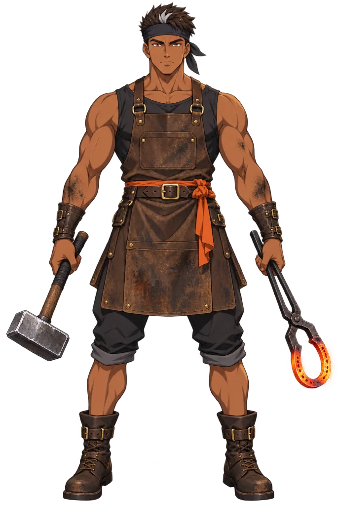

Describe or illustrate
Start with a prompt or a drawing. The input contract asks for clear limbs on a transparent background; a deterministic pixel check records whether it holds.
WACV 2027
Inkinesis turns a character described in words into a reusable, layered 2D asset. Move a shoulder without moving its elbow. Turn the head, blink, or speak. Then take those controls into Inochi2D or Live2D.
Our focus is the space between appearance and animation: verifying joints against the separated layers, deciding which garment pixels follow each limb, and preserving the combined behavior across runtimes.
Rigging an anime illustration requires assigning garments to moving limbs, keeping held objects in contact with hands, and preserving deformation in the target runtime. Inkinesis is an automated prompt-to-rig pipeline that delivers a runtime package without manual rig edits, reusing See-through, psd2live, and a vision-language model for layer decomposition, the face rig, and joint proposals. We contribute anatomical garment ownership for sleeves, trouser legs, and the seat; two-joint limb controls with per-chain hinge profiles and rigid wrist carriers; and Live2D export verified under the official Cubism Core. Our controlled evaluation builds rigs from a shared layered Photoshop document (PSD) and the same available observed joint anchors on 94 prompt-drawn characters, using 64 multi-joint poses from a frozen 164-pose protocol. In fixed-domain ablations, anatomical ownership reduces torso drift from 11.77% with nearest-bone assignment to 0.28% on 64 measurable characters, and removing the wrist carriers raises contact loss from 2.86% to 95.71%. No limb or garment fold-over occurs at evaluated poses. All 94 Live2D exports reproduce source geometry within 0.005 px under Cubism Core. These results support automatic garment assignment and rigid object following.
A replay of one recorded run for Ember Forge Smith: the prompt it was drawn from, the illustration, the layers, and the rig they became.

Step through the rail to take Asphalt Comet Skater apart and put it back together: this is the delivered rig, evaluated live at every step.
Start with a prompt or a drawing. The input contract asks for clear limbs on a transparent background; a deterministic pixel check records whether it holds.
See-through decomposes the appearance into hair, face, arms, clothing and legs. Every layer you see moving apart is a part of the delivered rig.
A vision-language model proposes shoulders, elbows, wrists, hips, knees and ankles. Inkinesis checks each proposal against the layer and silhouette masks before a chain is built.
Anatomical ownership splits the shorts at the fork: each leg tube follows its own limb and the seat blends both. What no limb claims stays with the torso. The colours are the fragments written into the delivered rig.
Two-joint limbs blend in rotation space with per-chain hinge profiles. Gated ranges reject any key that would reverse a triangle.
The canonical Inochi2D puppet ships with a Live2D export, checked under the official Cubism Core against the source evaluator.
The same live rig, the same arm and leg motion, split down the middle. Drag the divider: left of it, in Codeway red, is Inkinesis, the delivered rig. Right of it, in green, is the same mesh with one component replaced by the alternative the manuscript ablates, computed live on the same vertices.
No account, installation or GPU server. Pick any of the 30 example avatars below, the same thirty that ship with the Inkinesis studio, and it loads here with every control live. Hover the character for the x-ray lens: the deformed mesh and the limb that owns every pixel.
Hover a card to wake its rig; click it to load it into the viewer above with its original prompt.
Loading the collection…
No characters match. Try another name or clear the filters.
Application · Virtual YouTubers
Every character exports as a Live2D package. Open it in a Live2D-compatible VTuber app and it runs like any other model: your webcam drives the head, gaze, blinks and mouth, and hand tracking can drive the shoulders and elbows. From there it goes wherever the app goes: livestreams, recordings, video calls.
Take a character's Live2D package: the Live2D link under a rig in the playground, or Live2D (.zip) in the Inkinesis studio for any rig you make.
Open the package in a Live2D-compatible VTuber app that supports Cubism 5.0 or newer, and pick the character.
Face tracking drives the standard Live2D face parameters out of the box. The shoulder and elbow controls are parameters of their own that you map to hand tracking.
Capture the app in OBS or your streaming software, then stream, record or join a call as the character.
Exports target Cubism 5.0 or newer. The arm controls need their own mapping in the app and do not animate fingers.
Before you load a character into a VTuber app, try the same controls here with your own camera. Pick a character and it follows your face from your webcam. Switch to Face + arms and the camera pulls back: your shoulders and elbows drive the rig's arms.
Runs in your browser with MediaPipe. The Live2D export carries the same controls into VTuber apps. Your video never leaves this device.
Every export is replayed under the official Cubism Core and compared, vertex by vertex, with the source rig's evaluator. Zoom in until the difference should show.
Click any point of the rig: the view dives to ×10,000 at the nearest vertex and draws that vertex's own recorded Core difference, measured offline over 2,539 poses, beside the rig maximum. Click again to come back.
Each figure is one delivered rig, coloured by the largest gap between official Cubism Core and the source evaluator over every vertex and recorded pose. The colour scale runs up to the 0.005 px tolerance. Per rig from the delivery check; 94/94 from the manuscript.
A portable rig still inherits the limits of its drawing. Numerical correspondence does not guarantee a natural-looking pose.
A stress sweep combines yaw −45°, pitch −30°, roll −30° and mouth opening 1. Near these extremes the composite mouth patch and the neck boundary become visible. The illustration supplies no new underside of the chin or hidden hair texture; the live demo uses smaller angles.
A two-hand object gets no carrier. Instead the arms are restricted to the range the contact allows: here the left arm keeps only ±3.75° at the shoulder and ±7.5° at the elbow, and the right hand follows through a linked constraint. On the three measurable two-hand characters, Inkinesis realizes 44.50% of the commanded motion, against 95.58% over all characters.
A preview is the beginning. Download the character, inspect the rig, and use its controls in your own workflow.
Get started with InkinesisThe canonical, inspectable rig. Layered geometry and persistent parameters.
A compatible runtime package. Model, textures and editable project export.
Source code: Apache-2.0. Character assets and external runtimes have separate terms. Asset notice ↗
Open the package. Explore the geometry, artwork and controls you take with you.
Inkinesis builds on See-through for semantic decomposition and psd2live for facial keyforms and serialization. We thank Inochi2D for its open puppet format and native runtime, and Live2D Cubism for the official Core used in export validation. Their licenses and asset terms remain separate.
@inproceedings{celiktenyildiz2027inkinesis,
author = {Çeliktenyıldız, Mehmet Salih},
title = {Inkinesis: Prompt-to-Rig for Anime Characters
with Garment Ownership, Held-Object Carriers,
and Verified Live2D Export},
booktitle = {Proceedings of the IEEE/CVF Winter Conference
on Applications of Computer Vision (WACV) Workshops},
year = {2027}
}